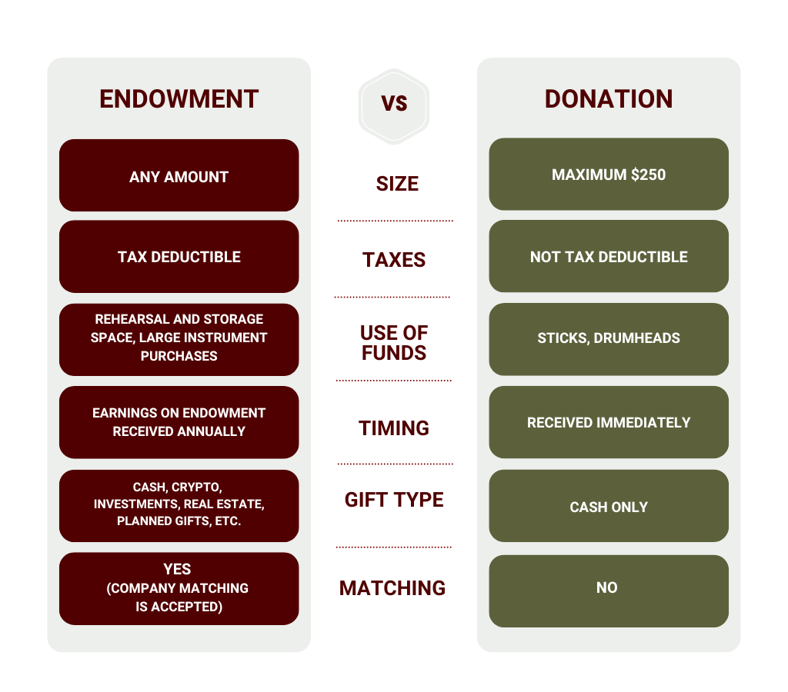

Percussion Studio was founded in 1999 and has run on student membership fees to cover our costs every semester. As we all know, things have gotten more expensive since 1999, so we are happy to have your support! Review the two options below for how you can support Percussion Studio today:
Compare the options to see which one best fits your giving goals:
| Method | Details |
|---|---|
| BEST WAY: Write a check |
Write a check to "Texas A&M Foundation" In the memo line: Acct #400-58956, Percussion Studio Excellent Excellence Endowment Mail to: Texas A&M Foundation, 401 George Bush Drive, College Station, TX 77840 |
| Credit Card | Donate online at give.am/PercussionStudioEndowment |
| Wire Transfer | Wire transfers are accepted. View instructions here. |
Stock contributions are also accepted, as well as other investments! Rather than list all those options, email percussionstudioalumni@gmail.com and a former Percussion Studio member who set up the endowment can get you in touch with the right people.